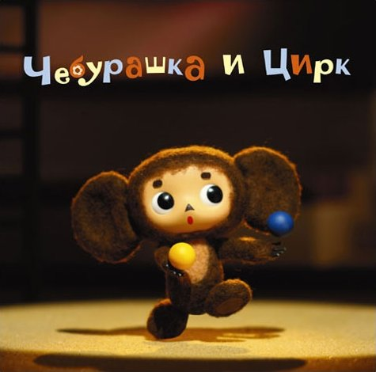

Человека отличает от животного много что. Шерсти меньше, мозг у большинства больше, у кошки четыре ноги, у человека противопоставленный большой палец, всё такое… В интеллектуальном плане человека отличает от животного способность думать о последствиях. Прогнозировать ситуацию в среднесрочной и долгосрочной перспективе, подчиняясь не инстинкту, животное неспособно.
Стоит отметить, что в детстве у людей такой способности тоже ещё нет. Ребёнок, не задумываясь о последствиях, легко ссорится с друзьями, не парится над тем, что в жизни ему пригодится математика, и занимается спортом для сиюминутного удовольствия, а не в заботах о здоровье или отношениях с противоположным полом.
Но, даже повзрослев, люди, часто попадая в критические ситуации (у некоторых вся жизнь может быть такой критической ситуацией), превращаются в животных и теряют способность прогнозировать.
Такой критической ситуацией может, к примеру, быть перманентная нехватка денег. Не думая о последствиях, человек идёт и оформляет кредит под грабительский процент. Иногда чтобы отдать предыдущий кредит. Проблема, по мнению человека, таким образом решается. Правда это сиюминутная проблема.
Драка у дверей клуба может быть такой ситуацией. Наверняка большинство участников (надеюсь все) той драки постарались бы как можно скорее замять начавшийся скандал, если бы критическая ситуация не сделала из них неспособных прогнозировать последствия животных.

Критической ситуацией может быть приказ начальника сделать хоть что-то, чтобы не допустить ничего. И в этом случае против людей с плакатами, или даже санками и чебурашками предпринимаются какие-то глупые, с точки зрения здравомыслящих людей, и асимметричные меры. Последствия неважны для собаки охраняющей щенят. Ей бесполезно объяснять, что пришли не за щенятами, а чтобы попробовать поремонтировать конуру. Вы можете её ударить, но она откусит вам руку. Победителей не будет. Важно решить проблему здесь и сейчас. А что будет завтра? А завтра мне отгул разрешили взять, мне неважно.